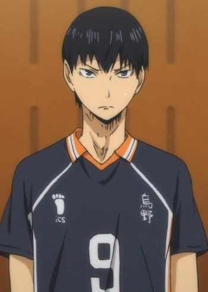

The Characters
Hinata Shoyo

The main protagonist. Hinata was a first-year student at Karasuno High and one of the volleyball team's middle blocker.
Tobio Kageyama

The deuteragonist. Kageyama was a first-year student at Karasuno High and plays as the starting setter for the boys' volleyball club.
Kei Tsukishima

A first year at Karasuno High. He plays as one of the starting middle blockers on the boys volleyball team.
Tadashi Yamaguchi

A first year student at Karasuno High. He plays on the boys volleyball team as a middle blocker and pinch server.